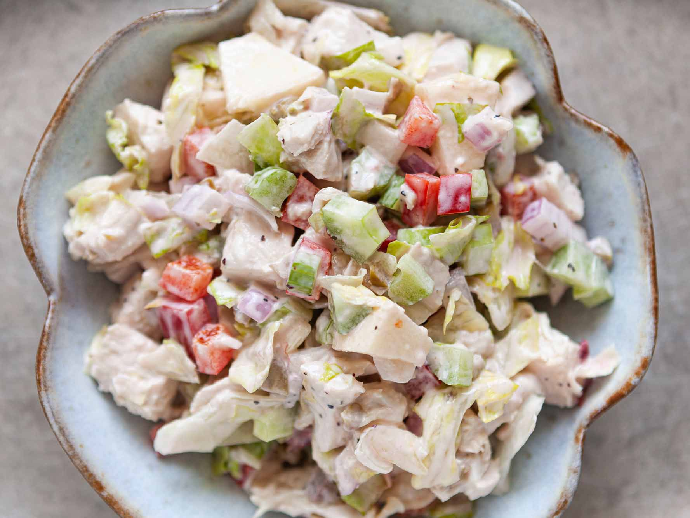

My friend Carol is a wonderful cook, and this recipe is a '10.' By far the best chicken salad I have tasted.
- ½ cup mayonnaise
- ½ teaspoon salt
- ¾ teaspoon poultry seasoning
- ¼ teaspoon onion powder
- ¼ teaspoon garlic powder
- ¼ teaspoon ground black pepper
- 1 tablespoon lemon juice
- 3 cups diced, cooked chicken breast meat
- ½ cup finely chopped celery
- ½ cup chopped green onions
- 1 (8 ounce) can water chestnuts, drained and chopped
- 1 ½ cups diced Swiss cheese
- 1 ½ cups halved green grapes
- Step 1
In a medium bowl, whisk together the mayonnaise, salt, poultry seasoning, onion powder, garlic powder, pepper, and lemon juice.
- Step 2
In a large bowl, toss together the chicken, celery, green onions, water chestnuts, Swiss cheese, and grapes. Add the mayonnaise mixture, and stir to coat. Chill until serving.